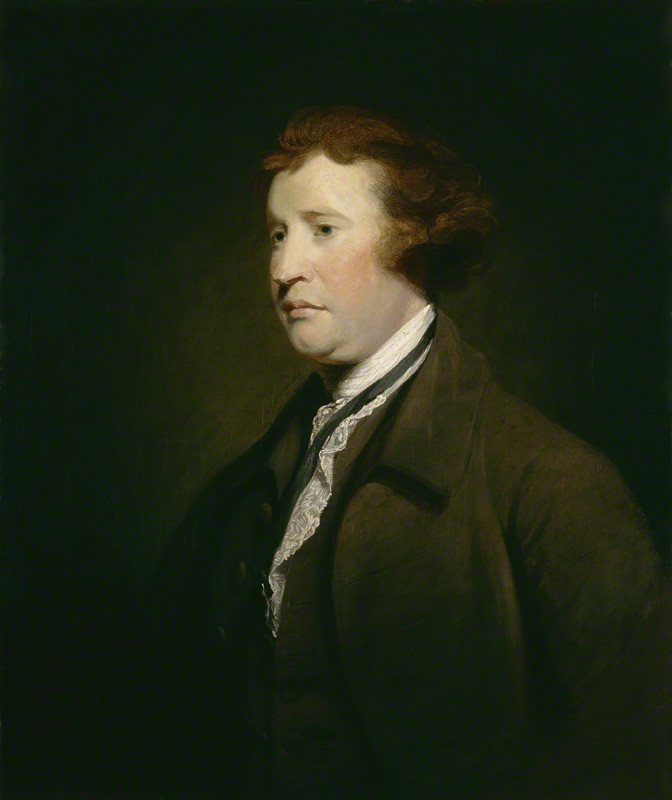
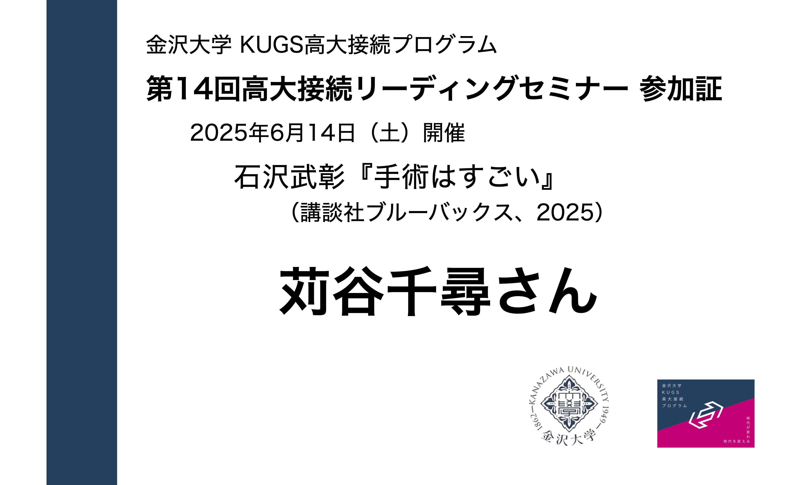

朝日新聞取材班『８がけ社会：消える労働者 朽ちるインフラ』(朝日新書、2024)
Reading Seminar #16 Summer 2025
![]()
2025年8月5日
Ⅰ. イントロダクション
はじめに
お願い
- 受講生のあいだでの意見交換、話し合う場合は、できるだけビデオオンにして下さい
本日のスケジュール（目安）
前半
- 13:00-13:20 趣旨説明と目標
- 13:20-13:30 自己紹介
- 13:30-14:30（60分） 意見の共有（全体）
休憩（15分）
後半
- 14:45-16:15（90分） 紹介文の作成（グループ）
- 16:15-17:00 まとめ
- 高大接続プログラム「大学での学び」レポート / 感想 / アンケート
- 17:00 終了
自己紹介：苅谷
- 専門：政治思想史
- 18世紀イギリスの議会政治
- 18世紀におけるレトリック受容
- 18世紀における主権概念と国際法、帝国
- 最近の興味関心
- データの可視化
- 統計言語Rとquarto
- データの可視化

趣旨説明
- 高校生向けに書かれた良書があるものの、高校生に読まれていない
- 大学での学びをイメージしてもらいたい
- ゼミでの輪読
- Cf. 研究者(大学教員)も輪読している
- 1冊の本、論文を全員で読み、内容を共有、評価する
- Cf. ビブリオバトルとの違い「競争ではない」
- Cf. 静かな流行「読書会」
- ゼミでの輪読
- 正解のない学びを体験して欲しい
- Cf. 現代国語
- 論文として紹介されているものもエッセイに近い
- 大学で求められるレポート、論文の形式を知る
趣旨説明
- 入試問題
- 京都大学新聞「解かずに読む共通テスト書評2025」
共通テスト「国語」や「公共、倫理」で出題される文章題は、世相や世代にあったテーマを扱う文献から引用されることも多く、じっくり読むと意外に面白い。とはいえ問題を解く立場だと、問題文をのんびり読んでる場合ではないし、内容にちょっと興味を持ったとしても、試験後の忙しさにかまけて忘れてしまう受験生が少なくないのではないだろうか。
京大新聞では例年、その年の共テ問題文の出典から数冊をピックアップし、その書評を掲載している。本面をきっかけに出題文を思い出し、受験後にでも読んでみようか、と思ってもらえれば幸いだ。（編集部）
- 国語：高岡文章（観光社会学者）「観光は「見る」ことである／ない：観光のまなざし」をめぐって」（『〈みる／みられる〉のメディア論』所収）
- 国語：蜂飼耳「繭の遊戯」（『極上掌篇小説』所収）
- 公共、倫理：ミシェル・アンリ（哲学者）『見えないものを見るカンディンスキー論』
趣旨説明 > 入試問題
- Cf. 東進ハイスクール解答・解説
- Cf. 京都大学新聞「解かずに読む共通テスト書評2024」
趣旨説明
- 学問
大隅良典「細胞の謎を解く：科学「役立つ」だけで測れず」 (『読売新聞』2019年7月23日)
でもこれまでわからなかったことを知る喜び、知的好奇心こそが科学の原動力で す。……役に立つという言葉が独り歩きして、役に立つとは何かを考えず、2、3年で何か応用できて製品になる、というイメージが若者の間にも広がっているように思えます。
注目が集まる領域だけでなく、誰もがまだほとんど関心を示さないことに挑戦するのも、科学の進歩のためには必要です。それには色々なことに挑戦できるような広い裾野が何よりも大切なのです。
情報×方法×問題意識あるいは知的好奇心
- 情報や方法は勉強である程度どうにかできるが・・・
紹介文（合作）の作成
- 受講生全員の意見をできるだけ反映しよう
- 共通点の発見
- 納得できる意見の発見
- 高校生(または同世代)に向けたものにしよう
紹介文は大学のウェブサイト（セミナー案内など）で紹介いたします
紹介文：山口慎太郎『「家族の幸せ」の経済学』（1/2）
あなたは帝王切開なんてだめ、赤ちゃんには母乳が一番、子どもが三才になるまではお母さんが尽きっきりで子育てをしないとダメ、などといった偏見やうわさ話を耳にしたことがあるだろうか。
本書は、こういった事柄をデータや研究を通して、科学的に説明している。また、筆者は人間の行動を理解し、幸せにつなげるための枠組みである経済学を通して、事案について考え、家族の幸せというものの真実をとらえようとしている。本書は、家族の成立から子育てまで各分野について章立てされ、データや科学的根拠を基に「幸せとは何か」を問うている。
客観的な視点から著されているため、現時点で自分の家庭を持っていない高校生が、本書を読み進めながら、理想の家庭像を考えられるところが良い。また、子育ての経験がない高校生であってもデータから納得できる点が多い点も、本書のよい点である。もちろん、結婚していて子供がいない夫婦や結婚する予定のある人たちにとっても、本書は良書である。というのは、子育ての方針や家族のあり方を、決めておくことで子供が産まれた後などで意見の違いから二人の関係が悪くなるのが減ると思われるからだ。
紹介文：山口慎太郎『「家族の幸せ」の経済学』（2/2）
物事と向き合う時は「事実」と「神話」を見分けることが大事だということを、本書は伝えている。データ分析などの結果には大きな説得力があるのだ。データ分析にはこのような利点があるが、近年、日本の研究のデータ不足と質の低下のため、適切な統計調査が難しくなっていると著者は言う。「調査を依頼されるようなことがあれば、ぜひ、協力して欲しい」という著者のメッセージに応えていきたい。
- この他の紹介文はこちら
Ⅱ. 自己紹介
自己紹介
- 名前、出身地、学年
- 本セミナーに参加した理由
- 好きな本、お勧めの本
- なければ、好きな科目など、好きなことなら何でも
Ⅲ. 著書情報
今回のテーマ：朝日新聞取材班『８がけ社会』
出版社の案内
2040年に1200万人の労働力が足りなくなる。迫り来る超人口減少社会とどう向き合うか。取材班が現場を歩き実態に迫り打開策を探る、「朝日新聞」大反響連載を書籍化。多和田葉子氏、小熊英二氏、安宅和人氏、増田寛也氏ほか識者インタビューも収録。（出版社の案内）
今回のテーマ：朝日新聞取材班『８がけ社会』
関連情報
「【朝日新聞社】ドラマ「新しい朝をつくれ。」８がけ社会編 第二話」（via YouTube）
「シャチョ地上波テレビ出演に続いて、朝日新聞元旦特集記事に掲載！の巻」（via YouTube）
Ⅲ. 意見の共有
意見の共有
- 別紙「事前課題一覧リスト」に沿って進めます
- 著者がもっとも主張したい事柄
- あなたが重要だと考えた箇所
- 著者の主張のうち、理解できなかった点、納得できない点、よくわからなかった点
- この本の感想
フリーディスカッション
- グループワーク
- 受講生主導で思ったことを自由に話しあってみましょう
- 事前課題一覧リストを参考にしてもいいし、しなくてもかまいません
Ⅳ. 紹介文の作成
紹介文の内容
- 字数:400-800
- 書いて欲しいこと
- どんな人に読んで欲しいか(向いているか)
- 著者の主たる意図
- 読みどころはどこか
- 内容の要約
- +α(メッセージなど)
まとめ方の注意点
- 順序はこの通りでなくてかまいません
- この通りでない方がよいでしょう
紹介文のポイント（1/3）
⑴ 主語
- 著者（朝日新聞取材班）の主張と､解釈者（セミナー参加者）の主張を書き分ける
- 主語を明示的に書く
- 著者：著者は､朝日新聞取材班（敬称不要）は､本書は
- 解釈者：文脈上、自明の場合は、私たち､私たち高校生は､主語は明示しなくてもよい
- 読み手が迷う可能性があれば、明示しましょう
例：行政学者の水口は､「何でも説明できるものは何も説明していないのと同じことである」と述べ､森の定義の曖昧さを批判する。
紹介文のポイント（2/3）
⑵ 引用
- 直接引用
- 特に重要なところを抜き出す
- 「」（一重括弧で囲む・アカデミックな決まり｡論文、レポートではページ数の記載が必要だが、今回は不要）
- 間接引用
- ポイントを自分の言葉で言い直すこと（同上）
紹介文のポイント（3/3）
⑶ 読みどころ（解釈）の提示
- 著者の考えではなく、セミナー参加者の考え、意見を示す
⑷ 紹介文（レポート）に相応しい動詞､形容詞の選択
- × 思う（特に思うの多用は厳禁）/ すごい
- ○ だろう / 優れた
グループワーク
- 紹介文
- 何を書くか
- 役割分担
- 提出先：
- 手書き➡ 担当教員に渡す
- 文字入力➡ ZOOM「チャット」
V. まとめ
高大接続プログラム「大学での学び」レポート
- このプログラムは金沢大学KUGS高大接続プログラム（大学での学び）の対象です
- KUGS高大接続プログラム（の修了）
- ➡ 「KUGS特別入試」の出願資格要件
- 締め切り：1・2年生は開催日(本日)から 1か月以内 / 3年生は8月31日
- 特別入試に興味がある方は公式サイトをご覧下さい
重要
- レポート評価の返却に最大で約1ヶ月半かかります。レポート提出期限は1か月以内ですが、早く提出した方が早く返却されます
- 現在3年生の方は、表示されている締め切り日にかかわらず、8月31日までにレポートを提出して下さい
高大接続プログラム「大学での学び」レポート
課題内容
- 題名:「あなたが受講した個別プログラム名」
- 本文:
- 「受講した個別プログラムの要約」
- 「受講して気づいた課題(問題)」
- 「その課題(問題)を解決するために必要と思われる方策」について，あなた自身の考えを根拠に基づき具体的に記してください。
注意事項
- 要約はこのセミナーに参加していない者が読んでもわかるように書きましょう
- 感想文にならないように注意しましょう
- 受講して気付いた課題を明確に書けるかどうかが鍵です
- 課題は内容にかかわる社会的な事柄（自分の事柄ではない）にしましょう
高大接続プログラム「大学での学び」レポート
高大接続プログラム フローチャート

フローチャート
参加証
- セミナー終了後、個別にメールでお送りします
- 金沢大学に限らず、大学の出願書類として利用して下さい
- 主体性評価の判断材料となる可能性があります
セミナー後アンケート
- 提出先：Google Forms
- 締め切り：明日（8月6日（水）23時59分）